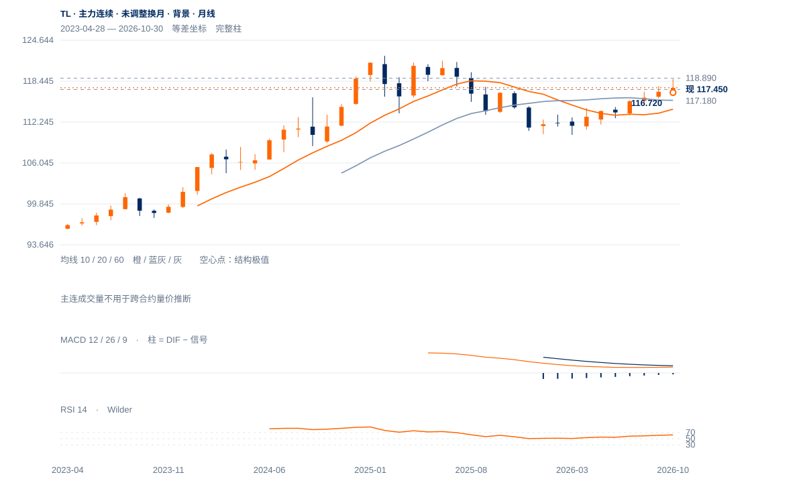
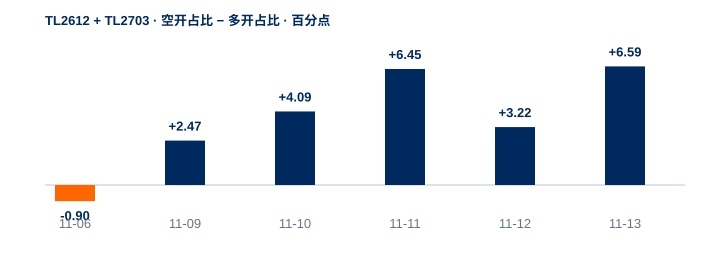
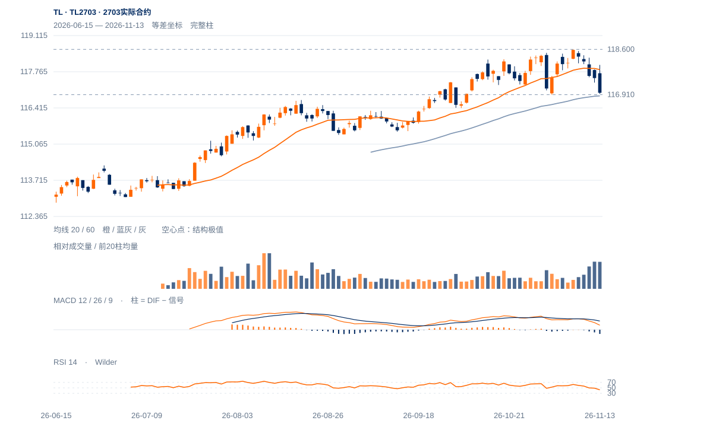

弱势延续
两合约共同弱收、周线转弱及下跌段新增参与支持调整延续，不能只以近月减仓解释。117.18／116.91尚未日收失守，短周期超卖反抽仍是最重要反方。
两合约共同弱收、周线转弱及下跌段新增参与支持调整延续，不能只以近月减仓解释。117.18／116.91尚未日收失守，短周期超卖反抽仍是最重要反方。
未来2—6周先看117.18能否承接，反弹仍需依次回收117.85、118.15原两日条件及118.37供应；未恢复前偏向下沿检验。若日收破117.18并反抽失败，116.72是下一实际波谷；118.89重新突破才恢复更强延续。
未来1—3个月转看TL2703：现收116.98，116.91前低与60日均衡116.865相邻，116.41为更早波谷，118.60为实际前高。基准是中期修复中的深回撤与重新筑底；连续两周收低116.91将使风险转向116.41，日收再破116.41则撤销该合约的较高低点解释。重夺117.47后仍需保持117.85附近均衡，才有再试118.60依据。

展开图表 ↗TL主力自2023年上市，2025年2月122.28高点后，2026年1月110.40与3月110.31形成低区，再回升至11月118.89。10月月收117.42高于10/20月均衡114.20/115.54，说明中期修复有基础；现阶段尚未重返2025大高。主连未经换月调整，双谷轮廓只作背景，不能用跨合约高度报出精确目标。
当前主连周收117.45仍略高于10周均衡117.366，并高于30周115.281，但本周下跌已把短线优势明显压缩。实际TL2612的8月115.69、10月116.72、11月2日117.18仍是较高低点链条；若117.18失守，这一中期支撑会先被破坏。当前不能把尚存的长期修复当成短线偏强依据。
实际合约中期较高低点受检验，117.18是近月前谷。短线恢复需完整小时及随后15分钟收回117.85；远月分别检验116.91与117.47。
TL2612／TL2703收117.45／116.98，分别距日低仅0.03／0.04点；完成周线大阴内包，周跌1.43／1.60点。11月6日后的修复升波已被大幅回吐。
近月减仓7576手、远月增仓4566手，合计减仓3010手；但两者都跌，远月更弱，价差由0.37扩大至0.47。价格压力并非只发生在减仓近月。
11:00—11:30两月分别跌0.24／0.27点、合计增仓1659手；空开12180手高于多开8635手。全天空开领先多开6.59个百分点，较昨日3.22扩大。
13:00—14:00的回补反抽有真实空平成交支持，但14:00后再跌。原小时加随后15分钟下行扩展已触发，新117.85／117.47修复过滤尚待未来完成。
各自完整60分钟及随后完整15分钟均收回117.85／117.47，转短线修复；118.37／118.02对应本轮上冲失败压力解除。
日收低于117.18／116.91，分别进一步破坏原修复波段；原跨资产研究118.15两日条件已于12日触发，独立保留。
当前仍在中期均衡附近，真实卖方压力若不能推动117.18有效下破，可能形成失败下破后的快速回收；完整小时及后续15分钟保持会提供比月线背景更早的反证。

| 日期 | 多开% | 空开% | 多平% | 空平% | 双开% | 双平% | 多换% | 空换% |
|---|---|---|---|---|---|---|---|---|
| 11-06 | 24.39 | 23.50 | 17.06 | 18.81 | 3.99 | 2.57 | 5.33 | 4.33 |
| 11-09 | 17.53 | 20.00 | 22.34 | 23.80 | 2.92 | 3.67 | 5.24 | 4.50 |
| 11-10 | 18.27 | 22.36 | 21.17 | 21.38 | 3.44 | 3.62 | 4.83 | 4.94 |
| 11-11 | 17.28 | 23.73 | 20.46 | 22.64 | 3.20 | 3.11 | 4.45 | 5.15 |
| 11-12 | 17.73 | 20.95 | 21.58 | 23.55 | 2.98 | 3.84 | 4.58 | 4.79 |
| 11-13 | 17.54 | 24.13 | 18.76 | 23.25 | 2.71 | 3.77 | 4.78 | 5.06 |
2703实际合约独立价格；1—3个月展望以此合约的高低点与保持条件为准。

展开图表 ↗| 周期 | 最后完整柱 | 图示柱数 | RSI14 | ATR14 | MACD柱 |
|---|---|---|---|---|---|
| 日线 | 2026-11-13 | 164 | 44.61972 | 0.55942 | -0.13153 |
| 周线（主连背景） | 2026-11-13 | 156 | 58.57586 | 1.07277 | 0.11317 |
| 月线（主连背景） | 2026-10-30 | 43 | 62.29413 | 2.79867 | -0.49794 |
国内完整周线至11月13日；11月月线进行中。主连未作换月调整，仅供长期背景；实际合约上市前无数据。